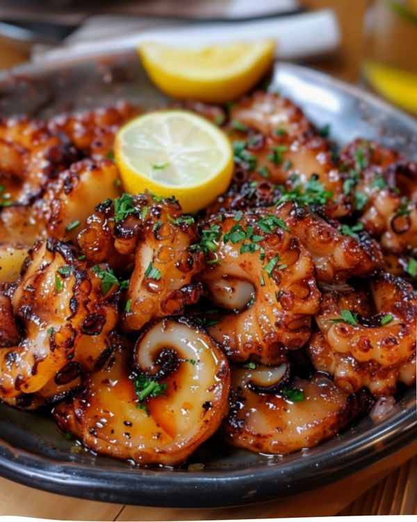

Pulpo a la gallega

Ingredientes:
- 150-200 g de pulpo cocido (preferiblemente pata entera)
- 1 patata mediana
- Pimentón dulce (tipo La Vera)
- Pimentón picante (opcional, si te gusta con carácter)
- Sal gruesa o en escamas (sal gorda gallega si la tienes)
- Aceite de oliva virgen extra (generoso y bueno)
Preparación:
- Corta el pulpo en rodajas de 1 cm aprox.
- Calienta el pulpo unos segundos en agua caliente, vapor o sartén (opcional, pero realza sabor).
- Cuece la patata entera (con piel) en agua con sal, unos 20-25 min o hasta que esté tierna.
- Pélala y córtala en rodajas de medio centímetro.
- En un plato de madera (si tienes, ideal), pon una base de patata cocida.
- Encima, las rodajas de pulpo templado.
- Espolvorea sal gorda, pimentón dulce y un toque de picante si te gusta.
- Riega generosamente con un buen chorro de aceite de oliva virgen extra.